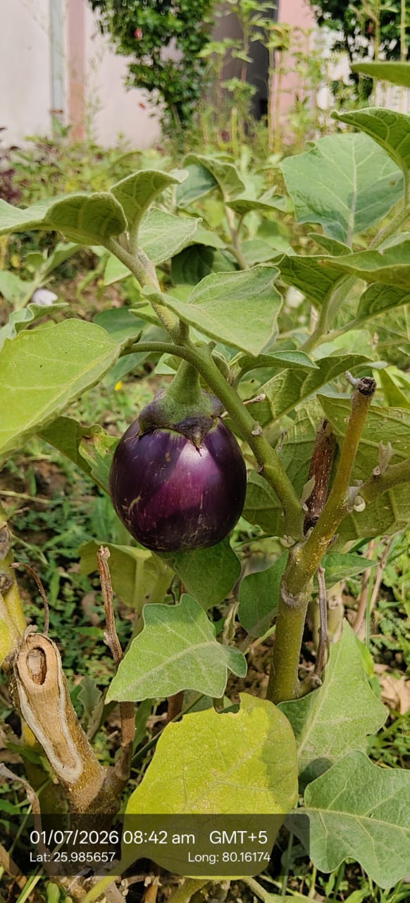

| Kingdom | Plantae |
|---|---|
| Genus | Solanum |
| Species | Solanum melongena |
| Scientific name | Solanum melongena var. esculentum |
| Type | Perennial herb grown as annual, often called an undershrub |
| Category | Herbs |
Habitat & Growing Conditions
- Native to India and cultivated across the entire country, including UP and Kanpur
- Thrives in hot, humid tropical and subtropical climate. Major summer and monsoon crop
- Needs full sun - at least 6-8 hours daily. Frost sensitive
- Grows best in fertile, well-drained sandy-loam or clay-loam soil with pH 5.5-6.8
- Commonly grown in kitchen gardens, fields, and commercial farms. The plant in your photo is in a home garden
- Requires regular watering but doesn’t tolerate waterlogging
- Native to India and Southeast Asia. Widely cultivated across UP, including Kanpur
- Grows as a crop in kitchen gardens, fields, and sometimes escapes to wastelands
- Thrives in hot, humid tropical and subtropical climate. Needs warm weather
- Prefers full sun. Grows best in well-drained, fertile, sandy-loam soil rich in organic matter
- Sensitive to frost. In North India, planted after winter and harvested through summer/monsoon
- Common in vegetable plots. The plant in your photo is likely cultivated or a garden escape

Economic & Ecological Importance
- Vegetable crop: One of India’s most important vegetables. Used in bharta, curries, pakoras, sambhar, and countless regional dishes
- Commercial value: Major cash crop for small and marginal farmers in UP. India is the 2nd largest producer globally
- Nutritional: Low calorie, high fiber. Good source of potassium, manganese, folate, and antioxidants like nasunin and chlorogenic acid
- Varieties: Hundreds of local cultivars. Round purple types like yours are common for bharta in North India
- Vegetable crop: Major vegetable in Indian cuisine. White brinjal is milder and less bitter than purple varieties. Used in bharta, curries, and fried dishes
- Nutritional: Low in calories, good source of fiber, potassium, manganese, and antioxidants like anthocyanins. White varieties have fewer alkaloids
- Market value: White and green brinjals often fetch premium prices in local markets due to lower seed content and tender skin
- Culinary: Preferred for specific dishes where color matters. Holds shape better when cooked
Medicinal Importance
- In Ayurveda, used for diabetes, liver disorders, and as a laxative. Leaves used for poultices. Note: Consult a healthcare professional before any medicinal use
- Processing: Used in pickles, dehydrated products, and ready-to-cook mixes
- Employment: Provides livelihood through cultivation, transport, and vegetable vending
- In Ayurveda, brinjal is considered light and used for diabetes and liver issues. Rich in nasunin, a brain-protective antioxidant. Note: Consult a healthcare professional before any medicinal use
- Genetic diversity: White-fruited types are important for crop breeding programs to develop pest resistance
- Home gardens: Easy to grow, productive even in small spaces. Popular for kitchen gardens in UP
Visual record